Douze états à consulter à l'écran, une seule en-tête sur tous les documents que le logiciel produit. Un état ne dessine jamais sa propre en-tête : établissement, période, auteur et horodatage viennent d'un générateur unique, si bien que deux documents ne peuvent pas afficher l'établissement différemment.
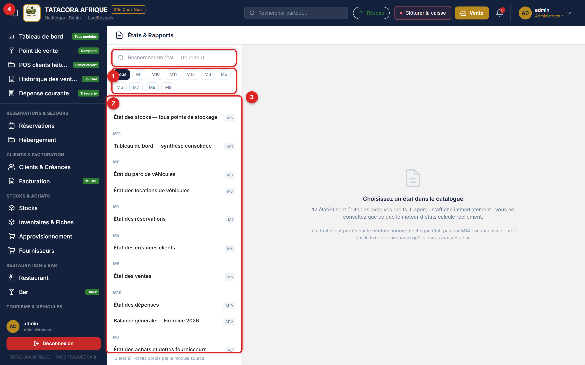
Le catalogue liste les états que le moteur produit réellement, groupés par module source. Un administrateur, qui a droit sur tous les modules, en voit douze ; votre profil en voit d'autant moins que ses droits sont étroits, et le pied du catalogue rappelle le compte.
| Module | État |
|---|---|
| M1 — Hébergement | État des réservations |
| M3 — Clients & créances | État des créances clients |
| M5 — Point de vente | État des ventes |
| M6 — Stocks | État des stocks — tous points de stockage |
| M7 — Achats | État des achats et dettes fournisseurs |
| M8 — Véhicules | État du parc de véhicules · État des locations de véhicules |
| M9 — Tourisme | État des réservations de circuits |
| M10 — Comptabilité | État des dépenses · Balance générale — Exercice AAAA |
| M11 — Pilotage | Tableau de bord — synthèse consolidée |
| M13 — Ressources humaines | État Paie & Effectif |
Un état affiché sans données le dit — « Aucune ligne sur cette période » — et ne produit pas une page blanche. L'état Locations de véhicules exclut par défaut les contrats annulés : ils ne comptent ni dans le nombre de contrats, ni dans le montant. Cochez Inclure les contrats annulés (case visible sur ce seul état) pour les voir apparaître : une colonne Statut (Actif / Annulé) s'ajoute, les annulés sont listés à part après tous les actifs, avec un montant vide, et les totaux restent identiques case cochée ou non. La période affichée précise si les annulés sont exclus ou inclus.
⚠️ Attention Si un état vous paraît vide à tort, vérifiez d'abord l'exercice consulté dans la barre supérieure. ℹ️ Sur le poste Windows Le poste présente le même catalogue, filtré par vos droits, et calcule les aperçus sur ses propres données, sans réseau — y compris les créances clients et la balance. Quand l'exercice consulté n'est pas l'exercice courant, un aperçu du poste le dit (« Sur ce poste : aperçu du jour, pas de l'exercice choisi ») au lieu d'afficher un chiffre faux. Les états de comptabilité du poste comptent les pièces saisies à la main non encore reprises par le serveur (§9.3). La case « Inclure les contrats annulés » existe aussi sur le poste.Une seconde page web, États, Rapports & Exports, présente les états accessibles à votre profil sous forme de cartes par module et, dessous, le tableau Historique des éditions : un journal en lecture seule, qui conserve la trace de qui a édité quoi, quand et dans quel format.
⚠️ Attention Cet écran est une maquette remplacée. Il le dit lui-même en bandeau : la page reste consultable parce qu'elle a été validée par le client, mais elle n'est plus au menu et l'écran en service est États & Rapports (§11.1). Elle n'existe pas sur le poste Windows.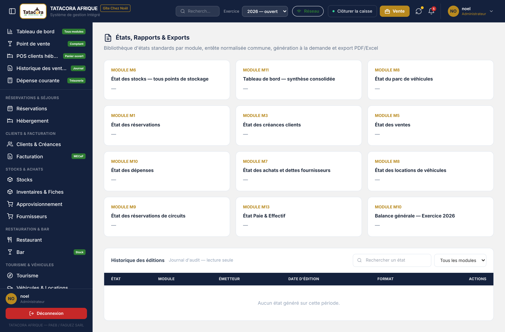
La fiche des prix est le document remis au client. Ce n'est pas un tableau de gestion : les catégories deviennent des sections — entrées, plats, sauces, boissons — et se lisent d'un bout à l'autre. Le logiciel la produit en document PDF, sous l'en-tête de l'établissement.
Ce bouton n'exige aucun droit d'écriture : un profil en lecture peut imprimer la fiche.
⚠️ Attention Un article sans prix n'est pas imprimé sur la fiche remise au client — l'écran annonce combien d'articles ont été écartés. Un tarif absent d'un document officiel devient négociable au comptoir. Si aucun article n'est tarifé, la fiche est refusée. Complétez les prix dans la carte avant d'éditer la fiche.Le module compose les messages destinés aux clients, aux salariés et à l'équipe — avec les vrais noms, les vrais montants et les vraies dates — et seul l'e-mail peut réellement partir, sous conditions. Pour les autres canaux, le logiciel prépare le texte, mais c'est vous qui prévenez.
🛑 Alerte WhatsApp, SMS et notifications Android ne partent pas : aucun des trois n'est contracté ni configuré. L'e-mail part si, et seulement si, deux conditions sont réunies : l'adresse e-mail du destinataire est connue (fiche client, fiche employé), et un serveur d'envoi (SMTP) est configuré dans les Paramètres (§13.2). Sinon le message reste en file avec sa raison — « Aucune adresse e-mail connue » ou « Aucun relais SMTP réel configuré ». Ne considérez jamais un client comme prévenu tant que le message n'est pas marqué « Envoyé » : appelez-le, puis tracez l'envoi à la main.Six compteurs — en file d'attente, réellement envoyés (e-mails partis), transmis à la main, abandonnés, modèles actifs, canaux branchés — puis cinq onglets. La bande de compteurs se replie.
| Onglet | Ce que vous y faites |
|---|---|
| File d'attente | Les messages composés, avec leur destinataire, leur canal et leur texte complet. Pour un e-mail : Envoyer (ou Renvoyer après un échec). Pour tout message : Transmis à la main (en indiquant comment) et Abandonner (avec motif). Une ligne dit combien de tentatives ont eu lieu, la dernière erreur, et si les relances automatiques sont épuisées. Les trois canaux non branchés portent la mention « à paramétrer au déploiement ». |
| Modèles | Les modèles de messages : objet, texte, variables disponibles, longueur. + Modèle en crée un, Modifier le corrige, Activer / Désactiver le met en service ou le retire. Un modèle utilisant une variable inconnue serait refusé : l'écran le signale. |
| Déclencheurs | L'événement qui produit chaque message : séjour — arrivée demain ; séjour — départ du jour ; créance échue de plus de 30 jours ; créance de plus de 90 jours (alerte au Gérant) ; article sous le seuil d'alerte (au magasinier) ; circuit — départ demain ; véhicule — restitution du jour ; bulletin de paie disponible ; échéance VPS le 10 du mois (au Comptable). |
| Journal | La trace de tout ce qui a été composé, transmis ou abandonné, avec l'auteur et la colonne Envoi système : « oui » uniquement pour un message que le transport a réellement accepté. |
| Canaux | L'état des quatre canaux — WhatsApp, e-mail, Android (push) et SMS — avec, pour chacun, ce qui le bloque. |
Le bouton Détecter maintenant compose tout de suite les messages à partir des données du jour. Sur le serveur, cette détection tourne aussi d'elle-même toutes les heures, et les e-mails en échec sont relancés régulièrement : vous n'avez pas à cliquer pour qu'un rappel de séjour parte, pourvu que l'adresse et le serveur d'envoi soient en place.
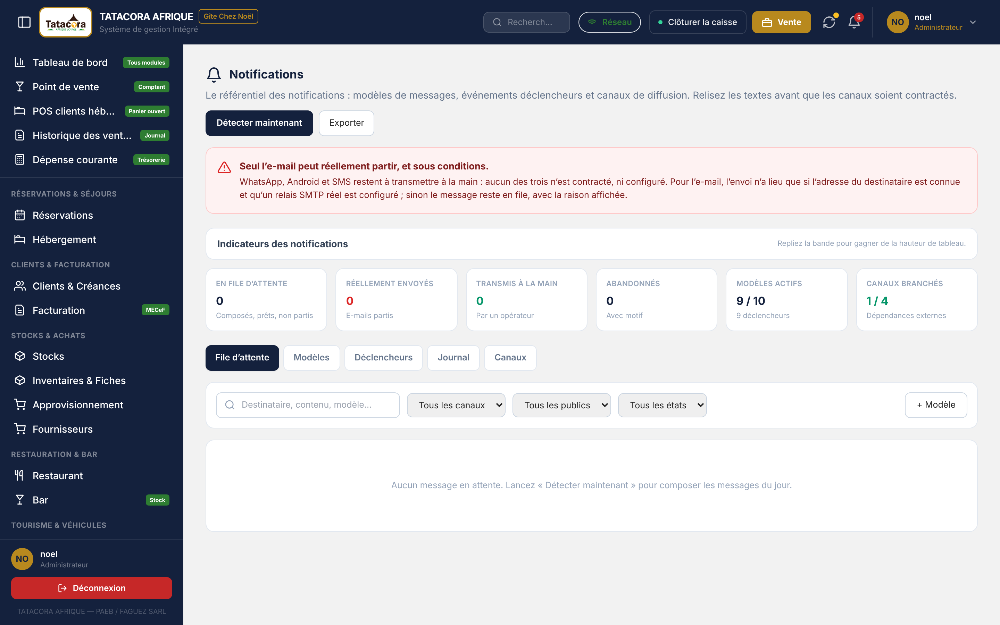
L'onglet Modèles présente chaque modèle avec son événement déclencheur, son canal, son objet, ses variables et son statut (actif, désactivé), et indique la longueur du message au regard de la limite du canal.
Les variables entre accolades — {nom}, {date}, {numero}, {montant} — sont remplacées par les valeurs réelles
au moment de la composition ; l'écran liste, pour chaque modèle, les variables qu'il peut employer. Les boutons PDF et Excel exportent l'onglet affiché.
Ce chapitre s'adresse à l'administrateur, et à ceux qu'il habilite. Il décrit qui a le droit de faire quoi, comment paramétrer l'établissement, comment charger des données et comment sauvegarder.
Onze rôles métier, seize modules, trois niveaux : C accès complet, L lecture seule, — aucun accès. L'écran affiche une carte par rôle — avec le nombre de modules en accès complet et en lecture, le nombre de comptes rattachés et un badge Conforme au socle du CdCF ou Matrice amendée — puis la matrice complète des permissions. Une section Profil de la matrice règle, rôle par rôle, trois droits personnels : modifier son nom complet, son téléphone, son intitulé de poste (« Mon profil »).
Le bouton + Nouveau rôle crée un profil supplémentaire (libellé et description) : tous ses modules sont fermés jusqu'à ce que vous lui accordiez des droits. Le bouton Rétablir le socle du CdCF remet les onze rôles du socle dans leur état contractuel d'origine — tout amendement apporté à ces rôles est perdu ; les rôles que vous avez créés ne sont pas touchés. Un administrateur ne peut pas se retirer l'accès à Rôles & Permissions : il se verrouillerait hors de l'écran qui permet de se corriger.
🛑 Alerte N'élargissez jamais un droit « pour dépanner ». Un accès ouvert en urgence reste ouvert : personne ne le referme. Si un utilisateur a besoin d'un écran, créez ou ajustez son rôle — la modification part au journal d'audit et reste explicable. ℹ️ Information Le menu masque certains écrans au gérant, même si ses droits les permettent. Sur décision de la Direction, le menu du gérant ne montre ni Tourisme, ni Véhicules & Locations, ni Comptabilité, ni Personnel & Paie, ni États & Rapports, ni Notifications, ni Clients & Créances, ni Facturation, ni le groupe d'administration. C'est un masquage d'interface, pas un retrait de droits : la matrice du gérant reste inchangée. Pour retirer réellement un droit, passez par la matrice.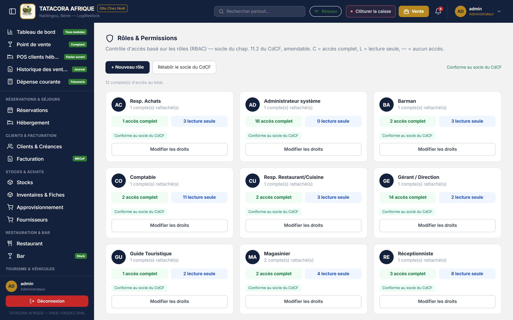
Les comptes des utilisateurs — réinitialisation d'un mot de passe oublié, code de secours de l'administrateur, suppression d'un compte — ont leur écran Comptes utilisateurs : voir le chapitre consacré aux comptes. Les deux rôles les plus élevés ne sont pas équivalents : seul un super administrateur peut supprimer un compte ou réinitialiser le mot de passe d'un autre super administrateur.
Chaque réglage se modifie par son bouton Modifier, dans une fenêtre qui enregistre un réglage à la fois : il n'y a pas de bouton global « Enregistrer les paramètres », pour qu'un enregistrement groupé n'écrase pas en silence le changement d'un autre administrateur. Chaque modification est tracée au journal d'audit.
| Onglet | Contenu |
|---|---|
| Identité & Légal | Raison sociale, promoteur, adresse, téléphone, e-mail de contact, activités (en-tête des factures), ville du lieu d'émission, référence facture, signataire (nom et fonction), affichage de la signature et du cachet, durée de validité des proformas ; puis IFU, RCCM, n° contribuable MECeF et régime fiscal (Réel normal, Réel simplifié, Taxe Professionnelle Unique) ; assujettissement à la TVA, taux de TVA, convention des prix du catalogue ; enfin la rubrique Facturation normalisée (MECeF) (ci-dessous). |
| Communication | Site web, numéro WhatsApp Business, état des canaux de notification : les coordonnées utilisées dans les messages et les documents. |
| Email (SMTP) | Serveur SMTP, port, sécurité (TLS, SSL ou aucune), utilisateur et mot de passe SMTP, puis le bouton Envoyer un email de test (ci-dessous). |
| Logo & Apparence | Changer le logo, Changer le favicon, et — pour les documents commerciaux — Changer la signature et Changer le cachet. Une image de plus de 400 Ko est réduite automatiquement ; l'ancien fichier n'est pas conservé. |
| Canaux de réservation | La liste des canaux proposés à la prise de réservation : Ajouter un canal, Renommer, Désactiver / Réactiver. Un canal utilisé ne se supprime pas, il se désactive ; renommer ne réécrit pas les réservations passées. |
| Espaces & tables | Les espaces (Restaurant, Jardin, Plage) et leurs tables : Ajouter une table, Renuméroter, activer ou désactiver, Rétablir le jeu initial (les treize tables d'origine). Une table dont le panier est ouvert ne se désactive pas. |
| Activation & Sécurité | Les trois bascules ci-dessous, puis deux rubriques de réglages : Charges sociales (taux CNSS, VPS) et Exploitation (tolérance de réception, taux d'annulation à moins de 24 h, préavis de congé, effectif minimal présent par service, rétention du journal d'audit). |
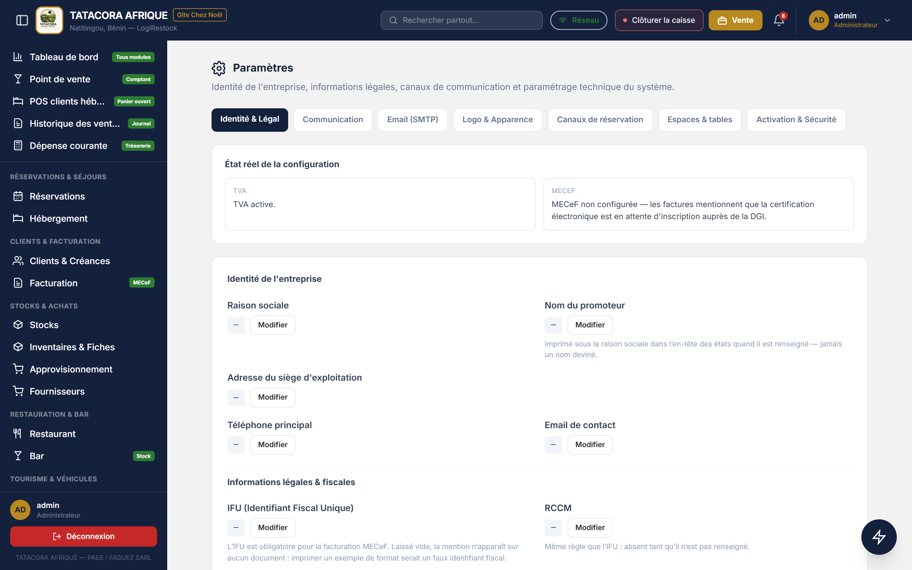
La rubrique Facturation normalisée (MECeF) règle le Mode, que seul l'administrateur modifie : Désactivé (le mode par défaut : factures simples, sans valeur fiscale), e-MECeF (en ligne) (le serveur certifie par l'API de la DGI, réseau exigé) ou Boîtier CC300 (poste) (le poste de la réception certifie par le boîtier branché en USB, même hors ligne). Elle porte aussi l'adresse de l'API, l'identifiant et le nom de l'opérateur, et, sur le web uniquement, le jeton e-MECeF : saisi par l'administrateur, rangé chiffré, jamais réaffiché et jamais envoyé aux postes ; Tester la connexion vérifie l'accès. Les modes et réglages se règlent au serveur ; le poste les reçoit en lecture. Cette fonction n'a pas encore été éprouvée sur le terrain : voir le chapitre consacré à la facturation normalisée et le §14.5.
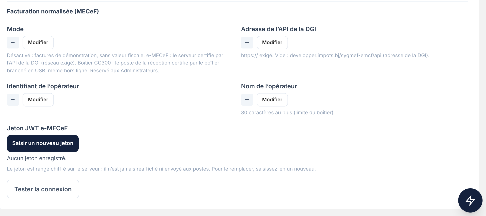
Dans l'onglet Email (SMTP), renseignez le serveur, le port, la sécurité et l'utilisateur, puis saisissez le mot de passe SMTP avec Enregistrer le mot de passe (Effacer le retire). Ce mot de passe est enregistré chiffré, jamais réaffiché ; seul un administrateur peut le saisir. Sans mot de passe saisi ici, la configuration du serveur s'applique. Envoyer un email de test écrit à l'« Email de contact » de l'onglet Identité & Légal et donne un résultat honnête : Email de test envoyé à …, Échec de l'envoi — le transport a répondu …, ou Aucun transport réel n'est configuré. Sur le poste Windows, le mot de passe SMTP est enregistré sur ce poste seulement (jamais dans la base) et jamais affiché.
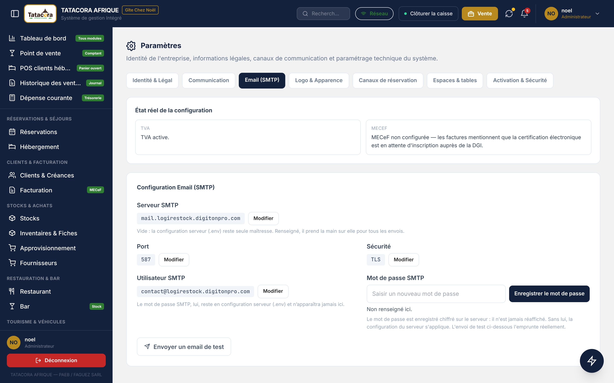
| Bascule | Effet | Par défaut |
|---|---|---|
| Suppression d'un enregistrement | Affiche le bouton Supprimer aux profils autres que l'administrateur (qui l'a toujours). La suppression reste un archivage : l'élément part aux archives et se restaure. | Fermée |
| Réinitialisation des données de test | Ouvre l'onglet qui vide les jeux d'essai (§13.4). | Fermée |
| Alertes à l'ouverture de session | Affiche les stocks critiques et les créances échues dès la connexion. | Ouverte |
Chaque bascule est étiquetée par son niveau de risque (faible, modéré, élevé). Une action désactivée est retirée de l'écran, pas grisée. Les anciennes bascules de duplication, de suppression groupée et de sauvegarde hebdomadaire n'existent plus : la sauvegarde automatique est désormais quotidienne (§13.4).
🛑 Alerte Refermez la bascule Réinitialisation des données de test dès que l'exploitation réelle a commencé. Cet onglet vide les jeux d'essai — et il ne fait pas la différence entre une donnée de test et une donnée de production saisie depuis. ℹ️ Information Les droits (RBAC) et ces bascules ne se remplacent pas, ils se superposent : le RBAC dit ce que votre profil peut faire, les bascules disent ce que l'application propose à tout le monde. La règle la plus restrictive gagne.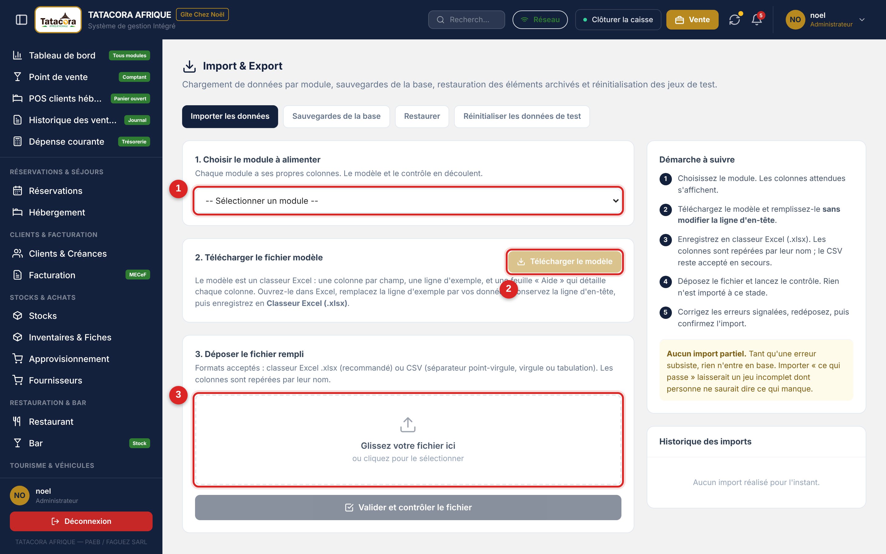
Le même écran porte trois autres onglets.
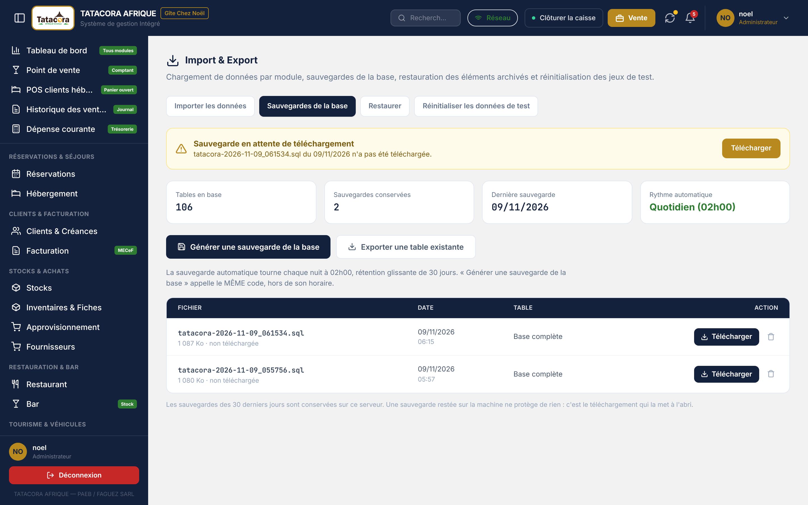
« Réinitialiser comme neuf » vide les données saisies pendant les essais, pour démarrer l'exploitation réelle sur une base propre. Elle n'est possible qu'à trois conditions réunies : être administrateur ; que la bascule Réinitialisation des données de test soit ouverte (§13.2) ; et que l'installation soit en phase d'essais (réglage technique posé par l'éditeur ou l'administrateur système). Une fois l'exploitation réelle lancée, la fonction est refusée quel que soit le rôle : c'est l'environnement qui refuse, pas un droit qui manque.
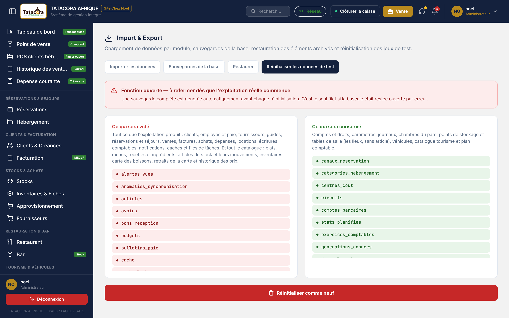
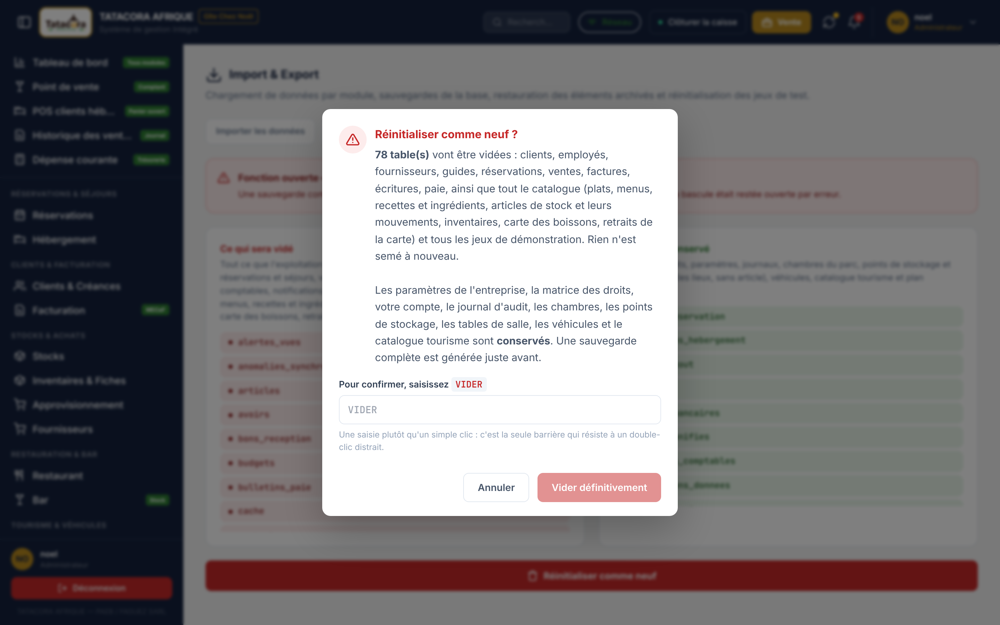
Chaque action sensible y figure : utilisateur, action (connexion, déconnexion, création, modification, suppression…), détail, date, heure et poste. Le détail nomme le type d'élément concerné (Réservation, Facture, Mouvement de stock…) et, quand il existe encore, son libellé ; il ne recopie pas les valeurs saisies, pour que le journal ne devienne pas une seconde surface d'exposition des données personnelles. La recherche porte sur l'utilisateur, l'action et le détail, et une liste filtre par type d'action ; au-delà d'un plafond, seules les entrées les plus récentes sont affichées et l'écran vous invite à affiner. Le journal est en lecture seule pour tous les profils, y compris l'administrateur : on ne le modifie pas depuis l'écran. Seule une durée de conservation fixée par l'administrateur (Paramètres, rubrique Exploitation, Rétention du journal d'audit) déclenche la suppression définitive des traces les plus anciennes ; laissée vide, aucune purge n'a lieu.
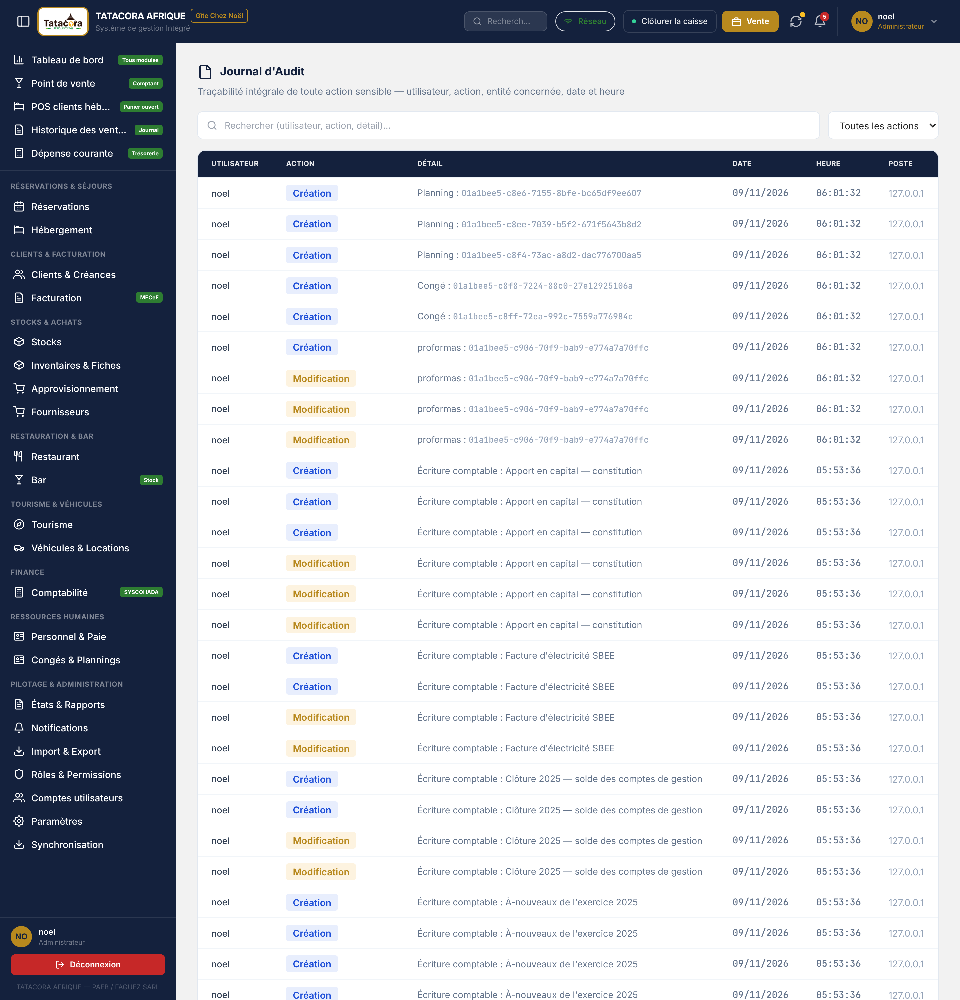